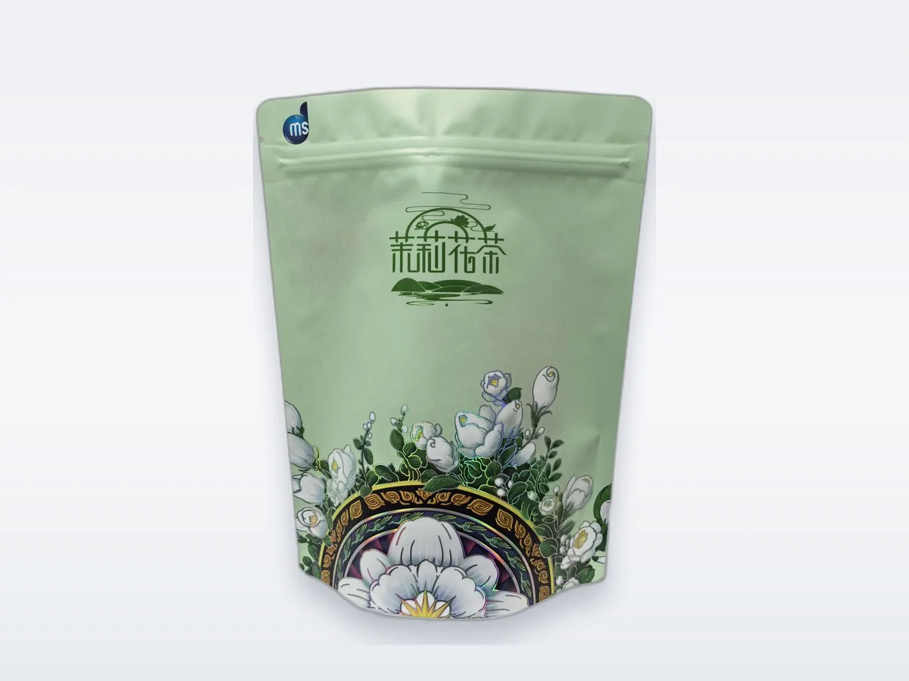

Flexible packaging for chips, nuts, dried fruit, candy, biscuits and baked snacks. Pre-made pouches for retail display, or printed roll film for your own VFFS line — with the barrier chosen against the shelf life you actually need.

Sample shown for format reference only; any branding on the sample belongs to its respective owner. Production uses your own artwork and specifications.
The right route follows your filling line and your shelf-life target, not a house preference. Both are quoted against the same specification.
Snack shelf life is decided by oxygen, moisture and light — the bag shape only carries the film.
Fats and oils in nuts, fried snacks and chips go rancid when oxygen reaches the product. Barrier film plus an effective nitrogen flush and a low residual oxygen level are what protect the shelf life.
Crisp products lose crunch when moisture migrates in; biscuits and crackers soften, dried fruit dries out further. Metallised structures with a proper moisture barrier hold the texture through distribution.
Light accelerates rancidity and colour fading. Opaque metallised or foil structures block it; a clear window is a display choice that should be weighed against the shelf-life target.
Bagged snacks are stacked, dropped and compressed in transit. Puncture resistance and seal strength matter as much as barrier, especially in larger pack sizes and bulk formats.
Indicative starting points. The final call follows fill weight, packing line and shelf target.
| Chips & puffed snacks | Roll film on a VFFS line for the pillow format, or a stand-up pouch when retail shelf presence matters more than line speed |
|---|---|
| Nuts & trail mix | Stand-up pouch with high barrier and optional zipper, or flat bottom for a premium shelf block; larger formats up to bulk sizes |
| Dried fruit | Stand-up or flat bottom with a moisture barrier; a window is possible if light exposure is acceptable |
| Candy & confectionery | Stand-up, quad seal or flat bottom depending on piece size; metallised film for sugar-based products |
| Biscuits & baked snacks | Flat bottom for retail stacking, or roll film where the product is packed in house; a rigid base protects breakable pieces |
| Bulk & food-service | Large stand-up or flat bottom formats with reinforced seals, sized against the fill weight rather than the shelf |
Selected against the product's fat content, moisture sensitivity and the shelf life you are targeting.
Snack ranges normally launch as a family rather than a single SKU. Digital printing allows several flavours or pack designs to run together without a cylinder set per design, which suits a new range or a seasonal variant. Once one flavour repeats in high volume, gravure becomes the lower unit cost route and the artwork moves across unchanged.
Five points that decide the structure, the print route and the price.
What buyers ask before committing to a first run.
Retail standard with zipper, window and valve options.
Box-style base for premium shelf blocking.
For VFFS and automatic lines running in house.
Comparing formats by product and filling method.
What drives the unit price and how to lower it.
Send the product, fill weight, shelf-life target, packing line and number of designs — we reply from Qingdao within one business day.